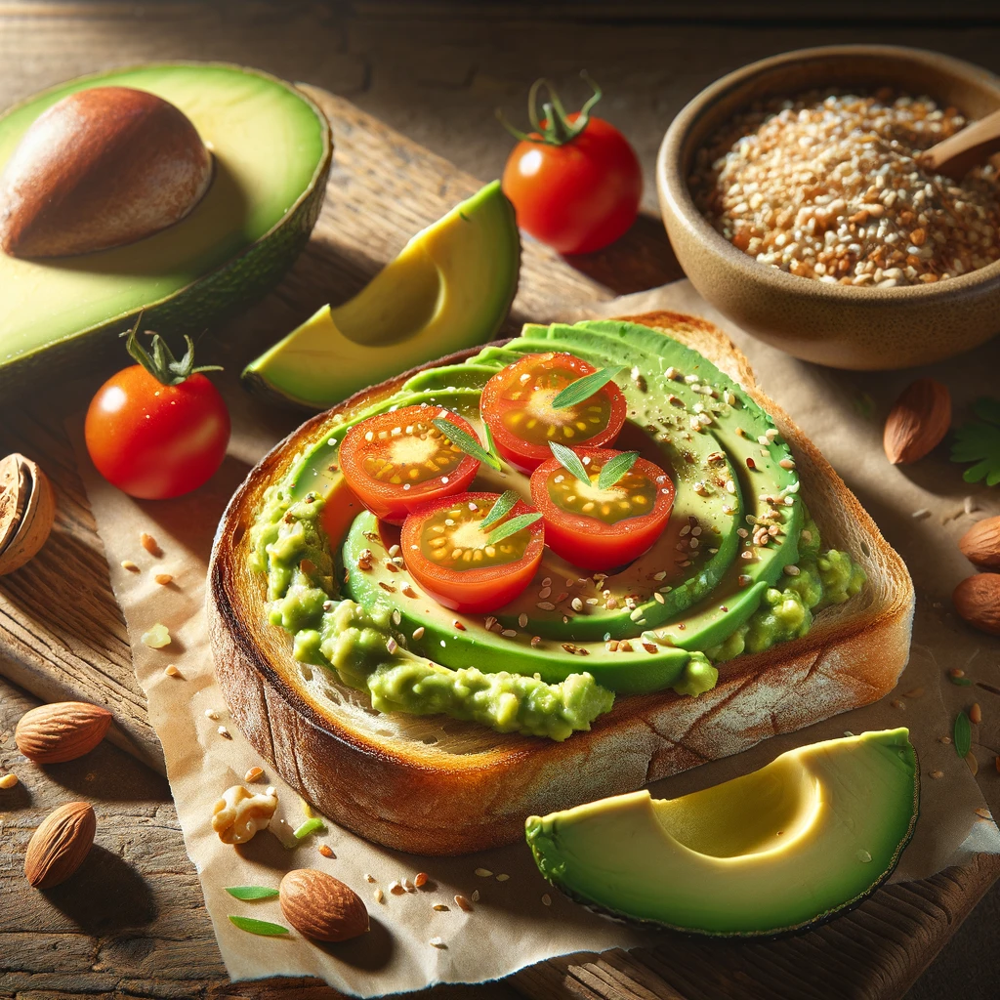

Avocado Toast with Cherry Tomatoes and Sesame Seeds

Description
Avocado Toast with Cherry Tomatoes and Sesame Seeds is a delightful combination of rich, creamy mashed avocado spread generously over crisp sourdough bread, topped with ripe, juicy cherry tomatoes. The dish is elevated with a sprinkle of nutty sesame seeds, adding texture and flavor. This modern classic is not only visually appealing but also packed with healthy fats, vitamins, and antioxidants, making it a perfect choice for breakfast, brunch, or a light, nutritious meal any time of the day.
Ingredients
- 2 slices of sourdough bread
- 1 ripe avocado
- 1/2 cup cherry tomatoes, halved
- 1 tablespoon sesame seeds
- Salt and pepper, to taste
- Olive oil (optional)
- A small bowl of mixed nuts for serving on the side
Steps
- Toast the Bread:
Toast the slices of sourdough bread to your preferred level of crispiness. A toaster or a heated skillet can be used for this step.
- Prepare the Avocado:
Cut the avocado in half, remove the pit, and scoop out the flesh into a bowl. Mash the avocado with a fork until it reaches your desired consistency. Season with salt and pepper to taste.
- Assemble the Toast:
Spread the mashed avocado generously over the toasted sourdough slices. Ensure the avocado layer is thick and even.
- Add Toppings:
Place the halved cherry tomatoes on top of the mashed avocado. Sprinkle the sesame seeds over the tomatoes, adding a nutty flavor and a bit of crunch.
- Final Touches:
For an extra burst of flavor, drizzle a little olive oil over the top and add another pinch of salt and pepper if needed.
- Serve:
Serve the avocado toast immediately, accompanied by the half-cut avocado (for visual appeal and extra avocado if desired) and a small bowl of mixed nuts for added texture and nutrition.